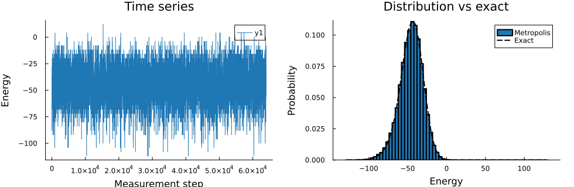
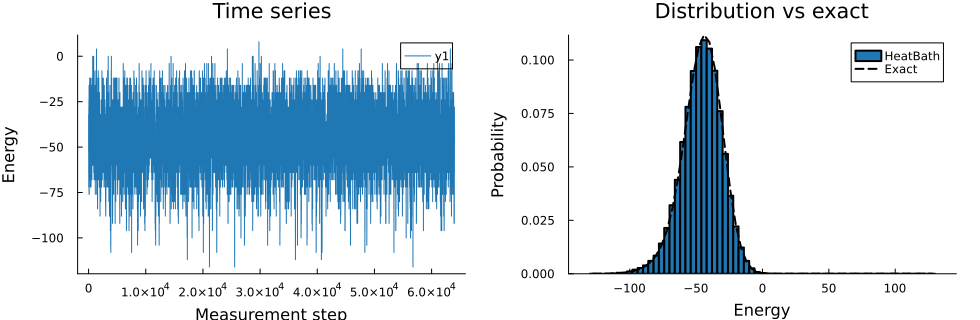
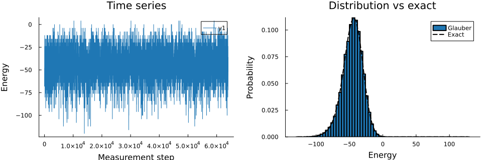

Importance Sampling of the 2D Ising Model
This example demonstrates importance sampling for the 2D Ising model with Hamiltonian $H = -J\sum_{\langle ij\rangle} s_i s_j$. We cover three topics: (1) system implementations and their runtime, (2) sampling algorithms, and (3) validation against the exact solution.
using Random, StatsBase, Plots, BenchmarkTools
using MonteCarloX, SpinSystems
using Graphs, SparseArraysCI parameters
const CI_MODE = get(ENV, "MCX_SMOKE", get(ENV, "MCX_CI", "false")) == "true"
therm_sweeps = CI_MODE ? 10 : 1_000
prod_sweeps = CI_MODE ? 100 : 10_000
measure_interval = 1010Parameters
L = 8
β = 0.3
seed = 4242System implementations
MonteCarloX.jl provides several ways to represent the 2D Ising model, trading generality for performance:
Ising([L,L]): general lattice, uses Graphs.jl under the hoodIsing(J_matrix): general, accepts any sparse coupling matrixIsingLatticeOptim: hard-coded 2D square lattice with periodic boundaries
We benchmark a single spin_flip! step for each.
alg_bench = Metropolis(Xoshiro(seed); β=β)
sys_graph = Ising([L, L]; J=1, periodic=true)
init!(sys_graph, :random, rng=MersenneTwister(seed))
grid_graph = Graphs.SimpleGraphs.grid([L, L]; periodic=true)
sys_matrix = Ising(SparseMatrixCSC{Float64,Int}(adjacency_matrix(grid_graph)))
init!(sys_matrix, :random, rng=MersenneTwister(seed))
sys_optim = IsingLatticeOptim(L, L)
init!(sys_optim, :random, rng=MersenneTwister(seed))
println("Graph-based Ising:")
@btime spin_flip!($sys_graph, $alg_bench)
println("Matrix-coupling Ising:")
@btime spin_flip!($sys_matrix, $alg_bench)
println("Optimized 2D Ising:")
@btime spin_flip!($sys_optim, $alg_bench)Graph-based Ising:
31.697 ns (0 allocations: 0 bytes)
Matrix-coupling Ising:
33.678 ns (0 allocations: 0 bytes)
Optimized 2D Ising:
27.035 ns (0 allocations: 0 bytes)The optimized implementation is significantly faster because it exploits the fixed lattice geometry to avoid graph traversal and sparse matrix lookups. The graph-based version is the most flexible — it works for any lattice geometry or connectivity without any code changes.
Custom acceptance rule
For the 2D Ising model $\Delta E \in \{-8,-4,0,4,8\}$, so we can precompute the two non-trivial acceptance probabilities and avoid calling exp at every step. This shows how to extend MonteCarloX.jl with a custom algorithm by implementing the accept! interface.
mutable struct TableMetropolis{R<:AbstractRNG} <: AbstractMetropolis
rng :: R
p4 :: Float64
p8 :: Float64
steps :: Int
accepted :: Int
end
TableMetropolis(rng::AbstractRNG; β::Real) =
TableMetropolis(rng, exp(-4β), exp(-8β), 0, 0)
@inline function MonteCarloX.accept!(alg::TableMetropolis, dE::Int)
alg.steps += 1
dE <= 0 && (alg.accepted += 1; return true)
p = dE == 4 ? alg.p4 : alg.p8
accepted = rand(alg.rng) < p
alg.accepted += accepted
return accepted
end
sys_table = IsingLatticeOptim(L, L)
init!(sys_table, :random, rng=Xoshiro(seed))
alg_table = TableMetropolis(Xoshiro(seed); β=β)
println("Standard Metropolis + Xoshiro:")
@btime spin_flip!($sys_optim, $alg_bench)
println("TableMetropolis + Xoshiro:")
@btime spin_flip!($sys_table, $alg_table)Standard Metropolis + Xoshiro:
26.667 ns (0 allocations: 0 bytes)
TableMetropolis + Xoshiro:
21.134 ns (0 allocations: 0 bytes)Simulation helper
function run_chain!(sys, alg)
N = length(sys.spins)
measurements = Measurements([
:energy => energy => Float64[],
:magnetization => magnetization => Float64[],
], interval=measure_interval)
for _ in 1:(N * therm_sweeps); spin_flip!(sys, alg); end
hasmethod(reset!, Tuple{typeof(alg)}) && reset!(alg)
for i in 1:(N * prod_sweeps)
spin_flip!(sys, alg)
measure!(measurements, sys, i)
end
energies = measurements[:energy].data
mags = measurements[:magnetization].data
return (; energies, mags,
avg_E = mean(energies) / N,
avg_M = mean(abs.(mags)) / N)
endrun_chain! (generic function with 1 method)Validation helper
The exact energy distribution follows the Boltzmann weights applied to the exact density of states (Beale 1996). plot_importance_sampling overlays the sampled histograms of all algorithms against this reference.
exact_logdos = logdos_exact_ising2D(L)
exact_logdos.values .-= exact_logdos[0]
log_dos = exact_logdos.values
log_w = log_dos .- β .* get_centers(exact_logdos)
log_Z = reduce((a,b) -> a > b ? a + log1p(exp(b-a)) : b + log1p(exp(a-b)),
filter(isfinite, log_w))
mask = isfinite.(log_dos)
E_exact = get_centers(exact_logdos)
P_exact = zeros(length(log_w))
P_exact[mask] = exp.(log_w[mask] .- log_Z)
function plot_importance_sampling(results, labels)
p_ts = plot(xlabel="Measurement step", ylabel="Energy",
title="Time series", legend=:topright)
p_dist = plot(xlabel="Energy", ylabel="Probability",
title="Distribution vs exact", legend=:topright)
cols = palette(:tab10)
for (i, (res, label)) in enumerate(zip(results, labels))
plot!(p_ts, res.energies; lw=1, color=cols[i])
edges = get_edges(exact_logdos.bins[1])
hist = fit(Histogram, res.energies, edges, closed=:left)
dist = StatsBase.normalize(hist; mode=:probability)
plot!(p_dist, dist; label=label, lw=2, color=cols[i])
end
mask = isfinite.(P_exact)
plot!(p_dist, E_exact[mask], P_exact[mask];
label="Exact", color=:black, lw=2, ls=:dash)
return plot(p_ts, p_dist; layout=(1,2), size=(980,320), margin=4Plots.mm)
endplot_importance_sampling (generic function with 1 method)Metropolis
The Metropolis-Hastings algorithm accepts a proposed spin flip with probability $\min(1, e^{-\beta\Delta E})$. It is the standard workhorse for spin systems: simple, general, and efficient.
sys_meta = IsingLatticeOptim(L, L)
init!(sys_meta, :random, rng=MersenneTwister(seed))
res_meta = run_chain!(sys_meta, Metropolis(MersenneTwister(seed); β=β))
plot_importance_sampling([res_meta], ["Metropolis"])
Heat Bath
The Heat Bath algorithm accepts with probability $1/(1+e^{\beta\Delta E})$, which corresponds to directly sampling the conditional distribution of a single spin given its neighbours. It tends to have shorter autocorrelation times than Metropolis at low temperatures.
sys_hb = IsingLatticeOptim(L, L)
init!(sys_hb, :random, rng=MersenneTwister(seed))
res_hb = run_chain!(sys_hb, HeatBath(MersenneTwister(seed); β=β))
plot_importance_sampling([res_hb], ["HeatBath"])
Glauber
The Glauber dynamics use the same acceptance probability as Heat Bath and are equivalent for spin-$1/2$ systems. The distinction matters for systems with more than two spin states, where Glauber uses a linearised transition rate rather than the exact conditional distribution.
sys_gla = IsingLatticeOptim(L, L)
init!(sys_gla, :random, rng=MersenneTwister(seed))
res_gla = run_chain!(sys_gla, Glauber(MersenneTwister(seed); β=β))
plot_importance_sampling([res_gla], ["Glauber"])
Comparison
All three algorithms sample the same Boltzmann distribution. Overlaying them confirms that the choice of algorithm does not affect the physics, only the efficiency.
plot_importance_sampling(
[res_meta, res_hb, res_gla],
["Metropolis", "HeatBath", "Glauber"]
)
println("Average energy per spin:")
println(" Exact : ", round(mean(get_centers(exact_logdos) .* P_exact); digits=3))
println(" Metropolis : ", round(res_meta.avg_E; digits=3))
println(" HeatBath : ", round(res_hb.avg_E; digits=3))
println(" Glauber : ", round(res_gla.avg_E; digits=3))Average energy per spin:
Exact : -0.702
Metropolis : -0.715
HeatBath : -0.718
Glauber : -0.71This page was generated using Literate.jl.